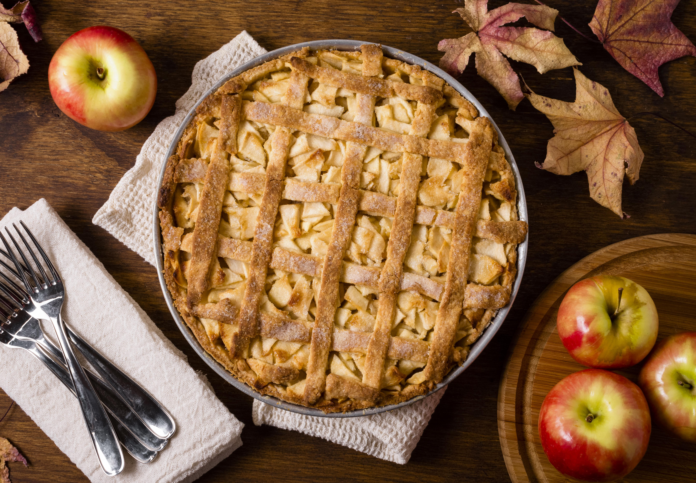

Home
Apple Cranberry Pie

This apple cranberry pie is a modified apple pie recipe my mother has had for years. I prefer a combination of Braeburn, Fuji, and McIntosh apples.
Ingredients
- 1 (14.1 ounce) package pastry for a double-crust 9-inch pie
- 4 cups peeled and sliced apples
- 2 cups cranberries
- ¾ cup white sugar
- 1 tablespoon cornstarch
- 1 teaspoon ground cinnamon
- 2 tablespoons butter, cut into small pieces
Steps
- Preheat the oven to 400 degrees F (200 degrees C). Line the bottom and sides of a 9-inch pie plate with one pie crust.
- Arrange sliced apples in prepared crust; spread cranberries over apples. Whisk sugar, cornstarch, and cinnamon in a small bowl; sprinkle mixture over cranberries. Distribute butter pieces over pie filling.
- Cover filling with remaining pie crust; crimp both crusts together, and cut several slits into top crust to vent steam.
- Bake in the preheated oven until pie is browned and fruit filling is bubbling, 45 minutes to 1 hour.